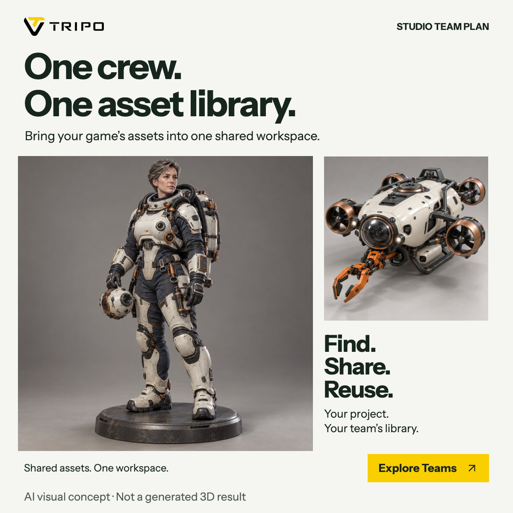
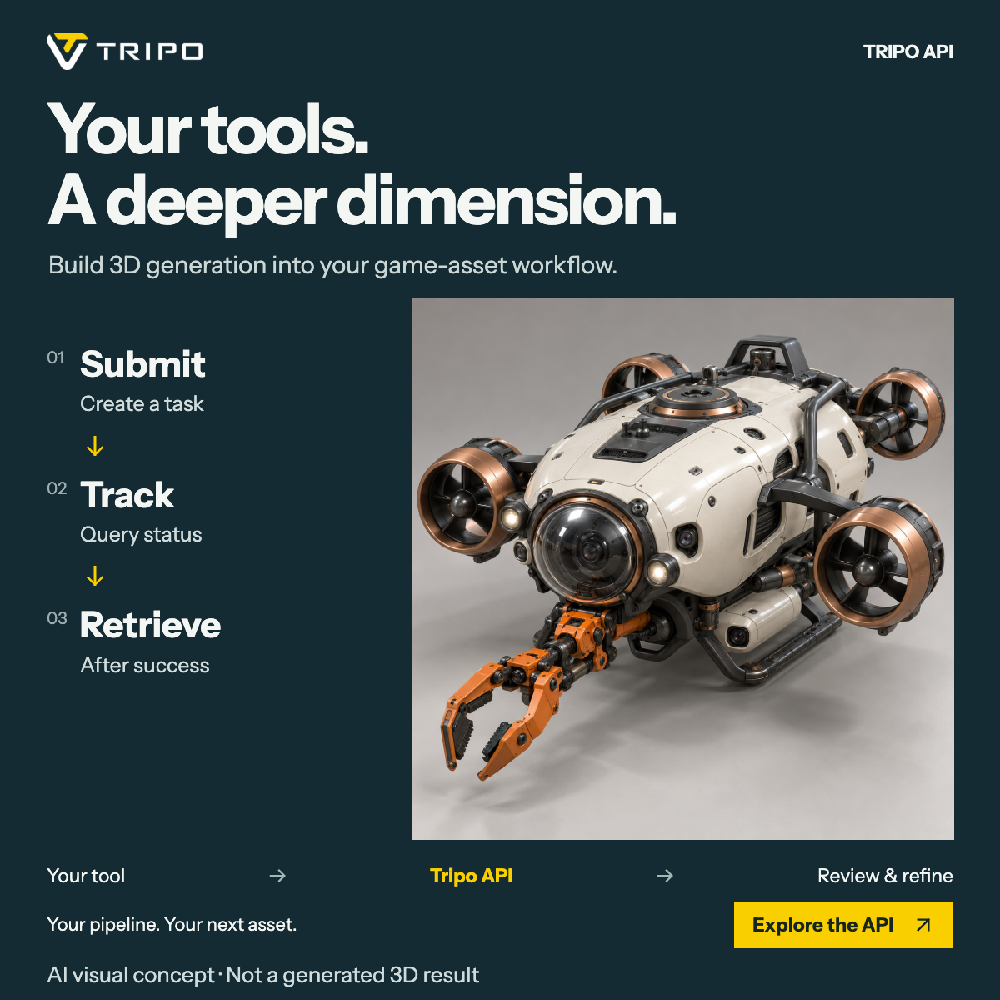
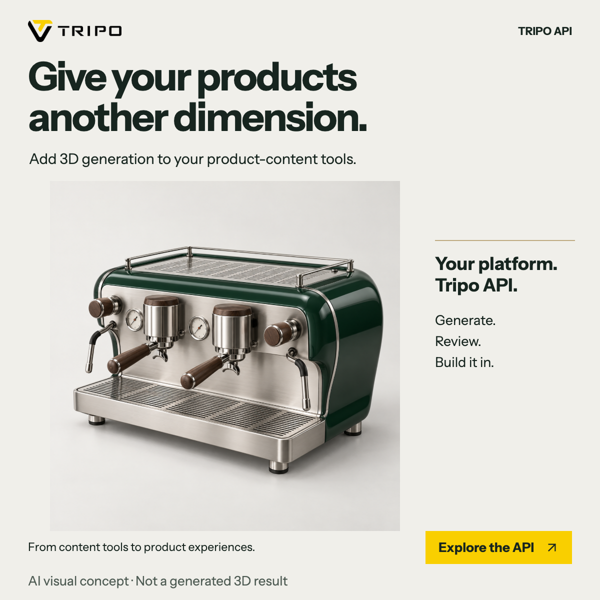
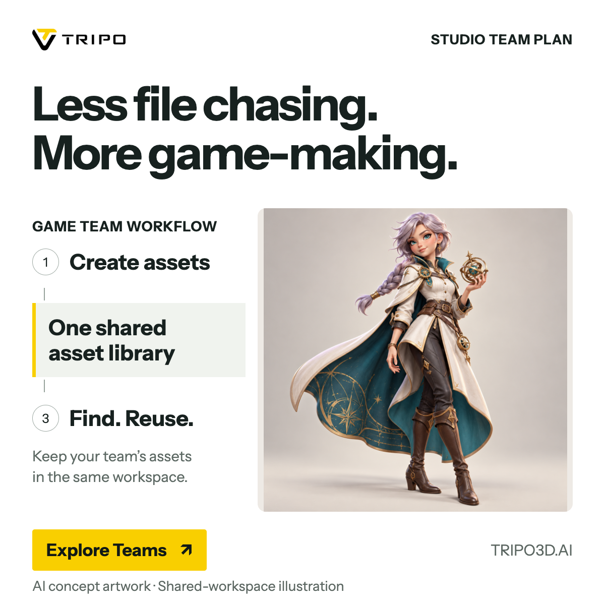
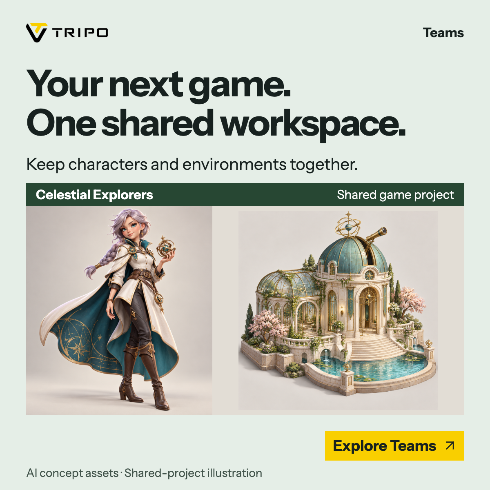
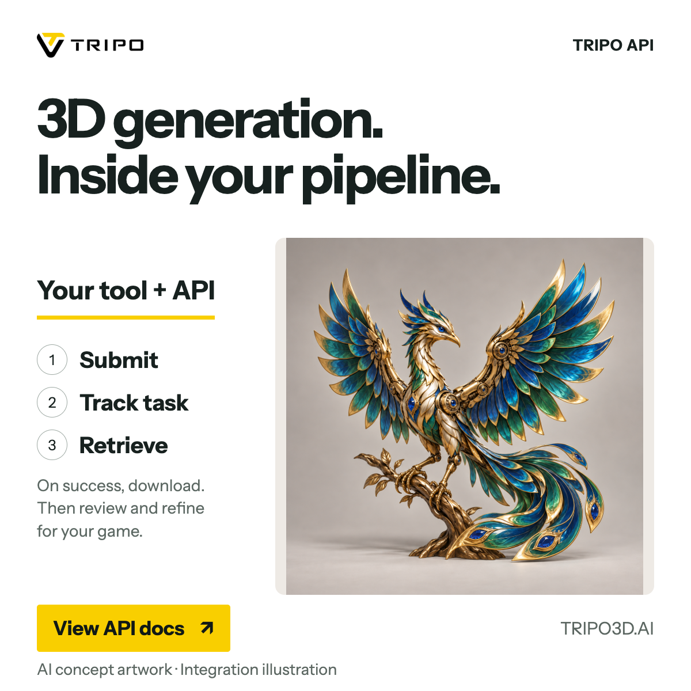
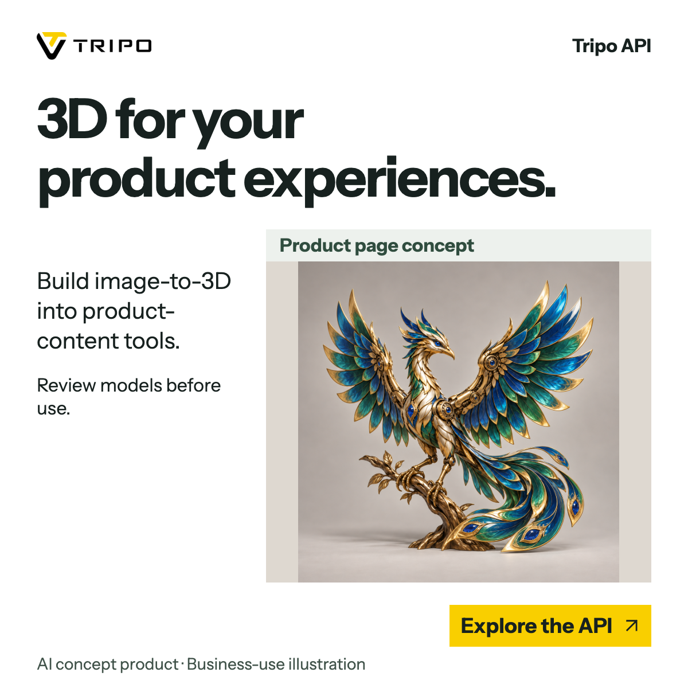
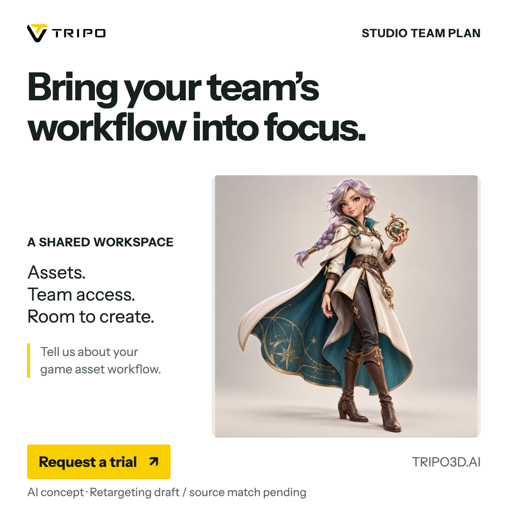
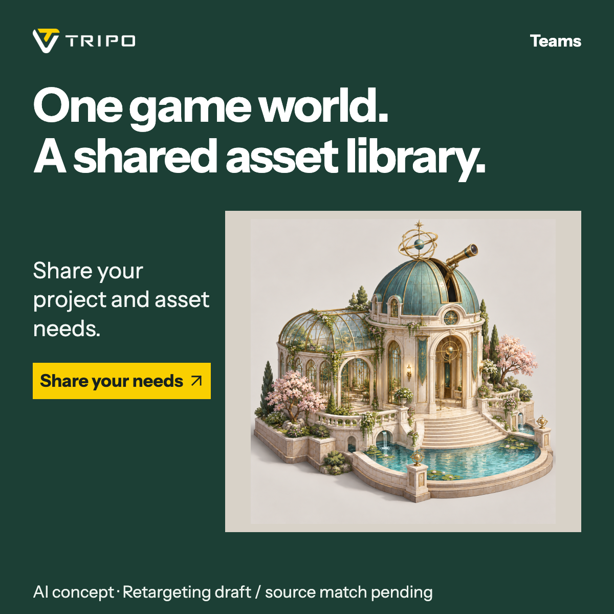

美国 Teams · 共享资产
角色与载具对应同一个团队项目，主张是共享库。
V19：5 个资产概念 × 4 张新广告 · V18 八张单图、V17 六套图文与站内信、历史八条站内信均保留
五个有独立轮廓的模型概念，四张对应业务方向的新稿。用完整形体、遮挡关系和材质层次加强 3D 视觉感；概念与真实网格分开看。

角色与载具对应同一个团队项目，主张是共享库。
用独立建筑资产落到具体游戏项目，不用普通风景照。

机械资产配异步任务步骤；取回之后仍需审查与精修。

明确产品对象与业务用途，不暗示已有真实商品案例。
审稿边界：四张广告均采用 GPT 二维视觉概念，不是 Tripo 真实生成结果，也不是三维质量对比。仍为静态审稿，未批准投放。
同一轮广告不只一种面貌。先选视觉方向，再看对应人群、英文文案和手机信息流；每种风格各两张。

清爽底色，让主体、材质和作品本身先被看见。

一句主张占据视觉重心，用大字与主体形成层级。

用环境、空间与光线交代应用语境，保留简洁文案。

以步骤和关系讲清工作方式，不把示意图当真实界面。
本轮边界：八张均为 1200 × 1200 的 AI 概念静态审稿，不是 Tripo 真实模型输出、真实产品 UI 或 Before / After 证据。风格比较不代表投放效果结论，尚未批准投放。
V17 / 按本轮已确认广告组制作
四套主方向分别对应已选人群，不代表所有美国或欧洲用户的偏好。每套的图文、站内信、配图与使用边界放在同一页审阅。

TEAMS · 美国游戏 / WORKFLOW角色、道具与资产库放在同一条工作链上。定性讲效率，不承诺量化节省。

TEAMS · 欧洲游戏 / 项目用途星仪探索者与温室天文台形成项目语境。是原创项目概念，不是客户案例。

API · 美国游戏＋3D资产 / WORKFLOW异步任务流程可视化：提交、查询、成功后取回，再审查和精修。

API · 欧洲企业内容 / 业务用途用产品页概念说明后续用途，不把查看器称为 API 自带功能。
必须沿用原视频中的产品与应用场景。当前新图只能审版式，不能冒充受众已看过的素材；按有效线索表现筛选，不把点击较好称为业务转化最好。

站内信 CTA：Request a trial。待补原视频与工作区证据。

站内信 CTA：Share your needs。待补原视频与真实案例。
同一角色参考的两种呈现路线。GPT 是二维概念重绘，会改变局部结构，不能当成 Tripo 真实输出，也不构成算法质量测试。四张 V11 广告仍全部使用真实 Tripo 模型。
保留同一网格与相机，白模材质与灯光针对体积重新设置；所有细节来自真实几何，能够换角度与继续编辑。
根据同一角色渲染生成的白模效果图。脸、装甲和布料细节可能重绘，不具备对应 3D 网格；适合审美探索，不用于产品成果证明。
仅看本例的二维成图，GPT 版的发丝、面部、布料褶皱和装甲边缘更细腻；但它重画了脸型、设备和手部，边缘仍有少量彩色残留。真实白模在优化前侧光后，体积明显改善，细节上限仍受原始几何限制。结论：GPT 可帮助探索审美方向；真实输入输出、几何或能力证明继续使用实际模型。两者输出尺寸与生成方式不同，不据此判定产品算法优劣。
图片等宽等区域、保持原比例，不裁切调色。点击图片看原文件。手机宽度模式让三列各保持 360px，可横向比较。
V15 Teams 使用自有中台输入衍生的 GPT hero 图，标为 AI concept / Workspace concept；API 使用中台235对应既有真实FBX的Blender白模与局部真实黑线框，标为 Workflow illustration，不是本次API生成。V14四张GPT概念和更早稿保留各自来源说明。共24张可放入左列对比，全部仍待审稿。
保留既有 6 条；本轮从 7 个新增品牌扩充 13 条案例。主图库仅显示已目视核验的静态图，实际载入总数见下方。远程图片保持原站外链，失效时仍可打开来源。
只保留来源线索，不纳入主图库或已核验总数。
原图原比例呈现，借鉴角色、拆分、材质、建筑与模型对照。两张 JPEG 更接近资产展示；案例来源不等于投放或产品能力已经验证。
保留文档水印与参考线，不把截图当高清原稿。借鉴结构、模型占比和对比方式；旧版本、优惠、倍率及 game-ready 字样不能直接沿用。来源文档是否可打开，取决于访客的飞书访问权限。
首帧已包含完整主张。动画只强调关系连接，不模拟生成速度；停止播放会返回静态稿。
会动的 GIF，不等于 LinkedIn 的 Dynamic Ads。Single Image 支持 JPG、PNG、GIF；动图最多 250 帧，文件上限 5 MB。两份本轮 GIF 均为 1200 × 1200、40 帧、4 秒。Single Image 官方规格 ↗
Dynamic Ads 是使用会员资料进行个性化的右侧栏广告类别，包括关注、焦点与招聘广告，不是“给单图加动画”的名称。素材格式达标也不等于已通过投放审核。Dynamic Ads 官方说明 ↗
打开风格研究：七项图证与五条改稿结论 →。下方保留此前六维框架及 V9 阶段的问题，便于追溯，不替代最新图证。
本轮方向是大方清晰的 B2B 信息层级，加上有细节、有材质、有真实来源的模型证明。“高级”不是颜色少、模型变灰或功能藏进小字。
| 维度 | AI / B2B 案例可借鉴 | 用户案例可借鉴与取舍 | 我们的合并方向 |
|---|---|---|---|
| 读者 / 主张 | Photoroom 把产品经理、工程时间与 API 接入放大；Perplexity 直接点名 IT，先说明“为谁解决什么”。 | 角色、打印、建筑用途容易辨认；部分历史稿同时叠加版本、速度、质量与优惠，主张过多。 | 一张对应一个角色和一个问题：团队负责人看共享管理，开发者看生成能力如何接入。 |
| 颜色 / 字体 | Jasper 使用单色红或蓝、大衬线字与 3D 隐喻，说明“领英感”不等于黑白或一律无衬线。 | 黄黑对比和醒目强调可保留；不照搬多套装饰字体、金属字与密集发光边框。 | Tripo 继续遵守 Instrument Sans 与品牌黄 #F9CF00；用对比和留白建立层级，不把材质统一压成灰色。 |
| 主体 / 打光 | 单一产品主体或 3D 隐喻服务主张；视觉物件与标题共同讲一个意思。 | 保留大模型、塑形光、材质分离与一处局部特写；减去抢主体的光环、边框和背景装饰。 | 给真实模型足够面积，看清轮廓、面部或硬表面细节。背景简洁，但模型仍有体积和材质层次。 |
| 证据形式 | 产品动作、接口用途或具体职业场景，让能力有可理解的落点；不是只写抽象“更高效”。 | 白模 / 贴图、分色部件、细节窗直观；静态图本身不能验证真实拓扑、8K、耗时或处理前后。 | 每张选一种有来源的主证据。实际输入与输出成对保留；概念关系标为示意；旧参数与促销不直接沿用。 |
| Teams / API 身份 | 借鉴点名目标岗位、工具或工作问题，使读者能辨认产品角色。 | 精细模型能展示视觉吸引力，但模型组不等于共享库，2D → 3D 也不等于接口集成。 | Teams 显示资产与共享 / 管理关系；API 显示程序接口、异步任务和结果获取，不只依赖角标或 CTA。 |
| 信息密度 / 动作感 | 借清晰主标题、单一视觉焦点与明确行动入口，不照搬任何案例的全部信息。 | 箭头与特写能引导阅读；减去多个大标题并列、重复徽章、旧参数和促销堆叠。 | 标题 → 模型证据 → CTA，辅助说明退后。静态首帧独立成立；GIF 只强调连接，不模拟生成速度。 |
T9-01 的模型组更接近作品陈列；T9-02 的共享流程更清楚，但模型细节被压缩。需让资产和共享管理建立可见关系，而非只增加标签。
A9-02 主要证明基础 2D → 3D；A9-01 才有提交、异步任务、取回结果的流程。不能让 API 身份仅留在角标或 CTA。
A9-01 下方辅助信息偏密；部分白模缩图偏暗，A9-02 彩色输入比白模输出更吸睛。白模可证明形体，但不充分展示成品质感，也不能据此判定模型本身质量差。
GIF 只作为可选连接强调，不模拟生成速度。“变高级”不等于 CTR 提升或 CPM 下降；本页不作投放效果结论。
研究记录保留各阶段的访问与核验边界；当前图库以各条目后续目视核验状态为准。仅有档案 ID 不足以进入主图库；Meshy 官网和站外图也不作为实际 LinkedIn 单图证据。本预览不提供历史页面。